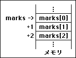
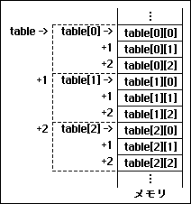
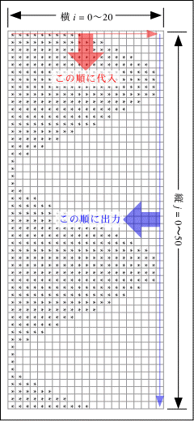
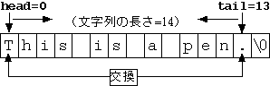

講義に入る前に shori2 にカレントディレクトリを移しておいてください。
データの数が１個とか数個くらいなら、 その一つ一つに対して変数を定義してもたいした手間ではありません。 ところがこれが１００個とか１０００個とか１００万個とか１億個とかになると、 こういうやり方では対応できないのは明らかです。 そこで、 変数の定義の際に変数名の後につけた [ ] 内に確保する変数の数を指定して、 複数の記憶要素を持つ変数を用意することができます。 これを配列変数と呼びます。
int marks[3]; // ３人分の点数データ |

上記の定義によって、 ３つ分の int 型のデータを格納する領域がコンピュータのメモリ上に 連続して確保され、marks という配列変数名はその先頭位置を指します。この配列変数の要素の一つを指定するときは、 [ ] に番号（整数）を書きます。 これを添字（インデックス）と呼びます。 添字は確保された領域の先頭の位置からの変位（オフセット）です。
この定義により marks[0], marks[1], marks[2] という ３つの int 型変数が使用できるようになります。 なお marks[3] は含まれないので注意してください。
#include <iostream.h>
int main(void) {
int marks[3];
marks[0] = 10;
marks[1] = 24;
marks[2] = 42;
cout << "合計点 = " << marks[0] + marks[1] + marks[2] << endl;
} |
添字には整数型の変数や式を使うこともできます。
#include <iostream.h>
int main(void) {
int marks[3];
int sum = 0;
marks[0] = 10;
marks[1] = 24;
marks[2] = 42;
for (int i = 0; i < 3; i++) {
sum += marks[i];
}
cout << "合計点 = " << sum << endl;
} |
添字に確保した配列の大きさを越える値 （上の例では３以上もしくは負の値） を指定してもコンパイル時にはエラーとして検出されませんが、 プログラムに割り当てられたメモリ以外の部分をアクセスすることになるため、 実行時にプログラムが core というファイルを生成して異常終了したり、 プログラムが期待通りに動かなかったりします。 注意してください。
行列（式）や表形式のデータなどを処理するのに便利なように、 二次元の配列も使うことができます。 これは次のようにして定義します。
int table[3][3]; // ２次元配列 |

これは以下のように３×３＝９個の要素を持つ配列を定義します。
table[0][0] table[0][1] table[0][2] table[1][0] table[1][1] table[1][2] table[2][0] table[2][1] table[2][2]
コンピュータの記憶空間（メモリ）は、 実際には一次元配列の構造をしているので、 ２次元以上の配列の領域は 右図のように一次元に展開して確保されます。
この図を見て分かるとおり、 この配列は３つの int 型の要素を持つ配列を、 ３組用意したものになります。
同様にして、三次元の配列は次のようにして定義します。
int volume[4][3][2]; // ３次元配列 |
この配列は４×３×２＝２４個の要素を持つ配列を定義します。 これは２個の要素を持つ int 型の配列３組をひとまとめにして、 それを更に４組用意します。 このようにして、さらに次元の高い配列を定義することもできます。
配列変数を初期化する場合は、 各要素に格納する値を { ... } の中に列挙します。
#include <iostream.h>
int main(void) {
int marks[3] = { 10, 24, 42 }; // 配列変数の初期化
int sum = 0;
for (int i = 0; i < 3; i++) {
sum += marks[i];
}
cout << "合計点 = " << sum << endl;
} |
この場合は初期化するデータの並びから配列の要素の数がわかるので、 要素の数「３」は省略することができます。
int marks[] = { 10, 24, 42 }; // 配列変数の初期化
|
多次元配列の場合は次元の階層にあわせて値を列挙します。
int table[3][3] = {
{ 0, 1, 2 },
{ 3, 4, 5 },
{ 6, 7, 8 }
};
|
あるいは、要素の数だけ一度に列挙しても構いません。
int table[3][3] = { 0, 1, 2, 3, 4, 5, 6, 7, 8 };
|
なお、このような方法による配列の要素への値の設定は、 初期化の時のみ可能です。 配列へのデータの代入をこのような方法で行うことはできません。 配列の要素への値の代入は、最初の例のように、 一つ一つの要素に対して行う必要があります。
課題１７のプログラムでは、 出力されるグラフは縦書きになっていました。 これを横書きで出力するようにします （下の例は２周期分出力しています）。
% a.out[Enter]
**** ****
***** *****
****** ******
******* *******
******** ********
********* *********
********** **********
*********** ***********
************ ************
************ ************* *
************* ************* *
************** ************** *
************** *************** **
*************** **************** **
*************** ***************** ***
**************** ****************** ***
**************** ******************* ****
***************** ******************** ****
***************** ********************* *****
***************************************************
|

グラフを標準出力（cout, 画面）に出力する代わりに、 グラフのマス目の大きさの２次元配列を定義して、 一旦そこに格納します。 上図の大きさのグラフを得るには、グラフの高さは21、幅は51ありますから、 横21要素、縦51要素の char 型の配列変数を定義します。
このマス目（配列）の左から右 (i = 0→20) に向かって、順番に '*' や ' '（空白）を代入していき、 １行分が終わったら一つ下のマス目の列について同じ処理を繰り返します (j = 0→50)。
そして今度は、マス目を今度は上から下に向かってたどり、 その内容を出力していきます (j = 0→50)。 １行分出力したら、改行して一つ右の行について同じ処理を繰り返します (i = 20→0) 。
まず手始めに、 この配列のすべての要素に空白 ' ' を代入するプログラムを作成しましょう。 これは２重の for による繰り返しで書いてください。
各行（横方向）の棒グラフの長さを求めます。これを n とすれば、 マス目の横の数は21ですから、n = 10 * (sin(x) + 1.0) としましょう。
sin 関数の引数を x とすれば、マス目の縦の数が51ですから、 １周期分描こうと思えば x = 2 * 3.1415926536 * j / 50.0 になります。 j は現在の列（縦方向）の番号です。 右図のように２周期分描くなら 25.0 で割りましょう。
各マス目に空白 ' ' を代入する際、 マス目の桁位置を i として、i <= n であれば ' ' の代わりに '*' を代入するようにします。 「? ... : ...」は条件演算子です。
masume[j][i] = (i <= n) ? '*' : ' ';
全部のマス目を埋めることができたら、 その内容を縦方向に出力していきます。
メールにソースプログラムを添付して tokoi まで送ってください。Subject:（件名）は kadai20 としてください。
文字列は char 型の配列を用いて実現されています。 文字列の終端を示すために、 最後の要素（最後の文字の次）には '\0' （文字コード 0 の文字、すなわち数値の 0）が格納されています。
char name[4]; name[0] = 'K'; name[1] = 'e'; name[2] = 'n'; name[3] = '\0'; // 終端文字（ターミネータ） |
上の処理によって、配列 name[] には "Ken" という文字列が格納されます。 配列に格納された文字列を出力するには、 その配列名のみを指定します。
cout << "名前は " << name << endl; // 「名前は Ken」が出力される |
文字列はその先頭の要素から '\0' が見つかるまで１文字ずつ順に出力ストリームに送り出されます。 もし配列変数 name の最後の要素が '\0' でなければ、 文字列の最後が見つけられず、プログラムが暴走してしまいます。
文字列定数 はメモリ上にその文字列を格納する配列を用意し、 その要素に文字列を構成する文字をあらかじめ格納したものです。 文字列定数の「値」は、 その格納場所の先頭位置を指しています。
配列変数を文字列によって初期化することができます。
char name[] = { 'K', 'e', 'n', '\0' };
|
これは次のように書くことができます。
char name[] = "Ken"; |
なお、このような方法による配列の要素への値の設定は、 初期化の時のみ可能です。
キーボードから数値や文字（１文字）を入力するときは、 それを格納する変数をひとつ用意します。 ところが文字列は複数の文字からなる配列なので、 キーボードから入力する場合は、 入力した文字列が入りきるサイズをもった配列変数を用意する必要があります。
#include <iostream.h>
int main(void) {
char string[10]; // 入力文字列を格納する配列変数
cin.width(sizeof string); // 格納する配列変数のサイズの設定
cin >> string; // 文字列の入力
cout << "１つめ：" << string << endl; // 文字列の出力
cin.width(sizeof string); // 格納する配列変数のサイズの設定
cin >> string; // 文字列の入力
cout << "２つめ：" << string << endl; // 文字列の出力
cin.width(sizeof string); // 格納する配列変数のサイズの設定
cin >> string; // 文字列の入力
cout << "３つめ：" << string << endl; // 文字列の出力
return 0;
} |
用意した配列のサイズは cin.width() を使って入力ストリームに教えておきます。 sizeof は右側に指定した要素の大きさ（バイト数）を求める演算子で、 上の例の sizeof string は配列変数 string のサイズ (10) になります。 文字列の最後には終端文字 '\0' が追加されるため、 格納される最大文字数は「このサイズ - 1」になります。
入力した文字列は空白文字 （空白、タブ、改行）で区切って抽出演算子 >> の右辺に指定した配列変数に格納します。 文字列が cin.width() で指定した最大文字数より長ければ、 その文字数まで切り詰めて変数に格納し、 残りは次の入力ストリームに残されます（次の入力時に入力されます）。
% a.out[Enter] Wakayama University[Enter] （←入力文） １つめ：Wakayama （←最初の単語） ２つめ：Universit （←２番目の単語－切り詰められている） ３つめ：y （←２番目の単語の残り） |
上の例で１行の入力が３つの cin に振り分けられているのは、 キーボードからの入力が一旦オペレーティングシステムによって蓄えられ、 改行 ([Enter]) がタイプされたときに、 まとめてプログラムの入力ストリームに送られるからです。
入力文字列を空白文字を含めて配列変数に格納したいときは、 cin.getline() を使います。
#include <iostream.h>
int main(void) {
char string[10]; // 入力文字列を格納する配列変数
cin.getline(string, sizeof string); // 空白を含んだ文字列の入力
cout << string << endl; // 文字列の出力
return 0;
} |
cin.getline() は改行文字 '\n' が見つかるまで入力ストリームから文字列を読み取り、 一つ目の実引数に指定した配列変数 string に格納します。その際 '\n' は取り除かれ、代わりに '\0' が最後に追加されます。 ２つ目の実引数は格納する配列変数 string のサイズです。 この場合も格納される最大文字数は「このサイズ - 1」になり、 入力文字列がこの長さを超えたときは、この長さに切り詰められます。
% a.out[Enter] This is a pen.[Enter] （←入力文） This is a （←最初の９文字だけが入力されている） |
入力文字列の終端文字を '\n' 以外のものにしたいときは、 cin.getline() の引数の最後にそれを追加します。 この３つ目の引数は「デフォルト引数」と呼ばれ、 引数が指定が省略されていれば、あらかじめ設定されていた値 （この場合 '\n'）が使用されます。
cin.getline(string, sizeof string, '.'); // ピリオドまでを入力する |
入力ストリームから抽出演算子 >> を使って変数に数値を格納するとき、 入力文字列と変数のデータ型が一致していなければ、 プログラムは異常な動作をします。 これは入力を文字列として配列変数に格納した後で、 それを数値に変換すれば避けることができます。
#include <iostream.h>
#include <stdlib.h>
int main(void) {
char string[32]; // 入力文字列を格納する配列変数
cin.getline(string, sizeof string); // 文字列を入力
int i = atoi(string); // 文字列を整数型に変換
cin.getline(string, sizeof string); // 文字列を入力
double d = atof(string); // 文字列を実数型に変換
return 0;
} |
数値を表している文字列を、その数値に変換するには atoi() ライブラリ関数を使用します。
- atoi(s)
- 関数 atoi() は引数の文字列 s を整数値（int 型）に変換して戻り値として返します。
- atof(s)
- 関数 atof() は引数の文字列 s を実数値（double 型）に変換して戻り値として返します。
いずれも文字列の先頭から数値として扱われない文字が現れるまでを、 数値に変換します。変換できなかった場合は戻り値として 0 を返します。 atof() を使用する場合にはプログラムの最初のほうで stdlib.h あるいは stdlib.h をインクルードしておく必要があります。 文字列から数値への変換には、他に strtod() などの関数が使えます。
文字定数は文字型変数に代入することができますが、 文字列定数を文字型の配列変数に代入することはできません。 次の例はエラーになります。
char name[4]; name = "Ken"; // ×これはエラー |
文字列定数や配列変数に格納された文字列を 配列変数の個々の要素にコピーするには、 strcpy() などのライブラリ関数を使用します。
- strcpy(s1, s2)
- s2 は文字列が格納された配列変数か文字列定数で、 それを配列変数 s1 にコピーします。
- s1 は「s2 の文字数 + 1」より大きな要素数を 持っている必要があります。
- 戻り値は s1 です。
- strcat(s1, s2)
- s2 は文字列が格納された配列変数か文字列定数で、 それを配列変数 s1 に格納されている文字列の最後に追加します。
- s1 は「s1 に既に格納されている文字数+ s2 の文字数 + 1」 より大きな要素数を持っている必要があります。
- 戻り値は s1 です。
- この結果 name には "Hazuki Riona" という文字列が入るため、 name は char name[13以上]; として定義されている必要があります。
- strlen(s)
- s に指定した文字列の文字数を求め、 戻り値として返します。
- 文字数に '\0' は含みません。
int length; length = strlen("Ken");- この結果、length は３になります。
- strcmp(s1, s2)
- ２つの文字列 s1 と s2 が同じ内容なら 0、 s1 が s2 より「辞書の順で」前にあれば負、 後にあれば正の値を戻り値として返します。
if (strcmp("akane", "ranma") < 0) cout << "akane は ranma より前" << endl; if (strcmp("pig", "panda") > 0) cout << "pig は panda より後" << endl;
これらのライブラリ関数を使用する場合には、 string.h というヘッダファイルを プログラムの最初の部分でインクルードしておく必要があります。
#include <string.h> |
キーボードから入力した文字列を逆順に出力するプログラムを作成してください。
最初に入力された文字列の長さを求めます。 それにはライブラリ関数の strlen() が使用できます。
文字列の先頭の文字の位置を示す変数（たとえば head）を用意し、 それを 0 にしておきます。
文字列の末尾の文字の位置を示す変数（たとえば tail）を用意し、 それを「文字列の長さ－１」にしておきます。
head < tail の間以下の処理を繰り返します。
文字列を出力します。

% a.out[Enter] This is a pen.[Enter] （←入力文） .nep a si sihT （←逆順に出力） |
メールにソースプログラムを添付して tokoi まで送ってください。Subject:（件名）は kadai21 としてください。